Continentes e seus países
Descubra a diversidade dos continentes do nosso planeta.
Os continentes são grandes extensões de terra que abrigam diferentes povos, culturas,
climas e paisagens. Cada um deles possui características próprias, como a quantidade de
países, a população aproximada e aspectos geográficos que os tornam únicos.
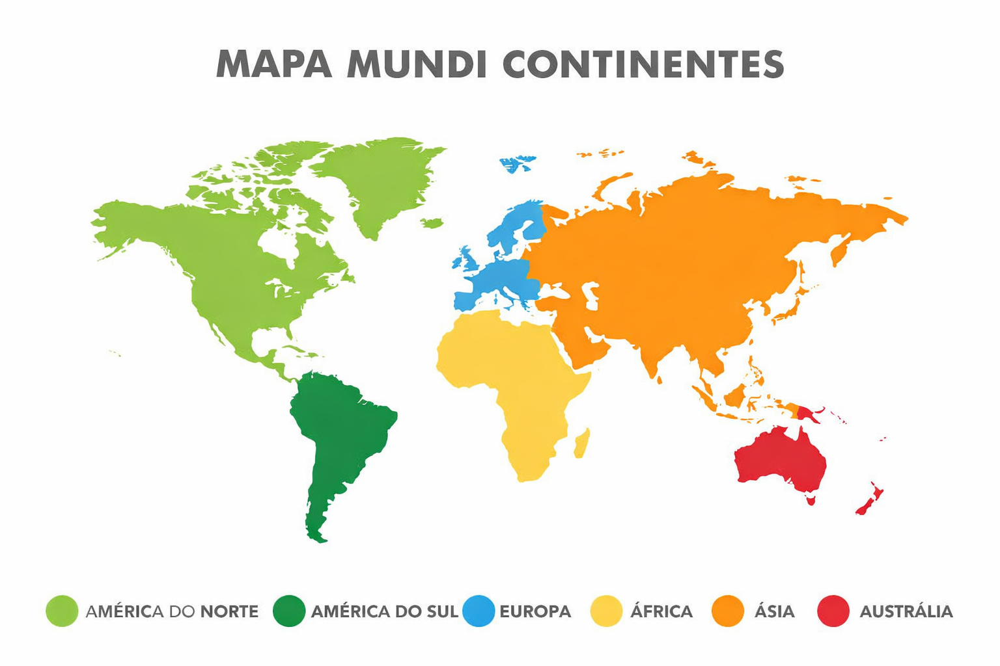
| Continente |
População aproximada |
N° de países |
| África |
1,4 bilhão |
54 |
| América do Sul |
430 milhões |
12 |
| América do Norte |
600 milhões |
23 |
| Europa |
748 milhões |
44 |
| Ásia |
4,8 bilhões |
48 |
| Oceania |
44 milhões |
14 |
| Antártida |
0 |
0 |
África
A África é o segundo maior continente do mundo e possui uma enorme diversidade
cultural, linguística e natural. É conhecida por suas savanas, desertos como o Saara e
grande variedade de animais selvagens. O continente tem muitos recursos naturais e
uma história muito rica. Apesar dos desafios sociais, vários países estão em crescimento
econômico.
África do Sul
- Possui 3 capitais
- Sediou a Copa de 2010
- Grande diversidade cultural
- Famosa pelos safáris
- Economia desenvolvida
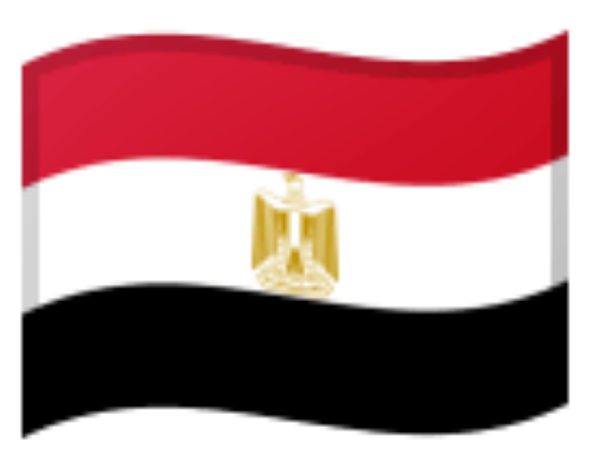
Egito
- Pirâmides famosas
- Rio Nilo importante
- Turismo forte
- Civilização antiga
- Capital: Cairo
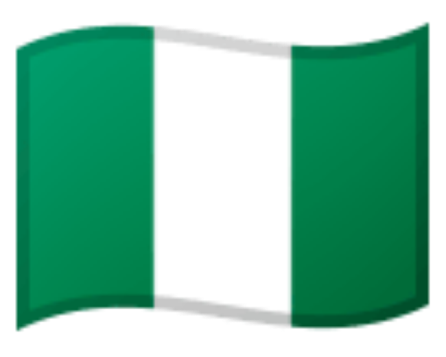
Nigéria
- Mais populoso da África
- Produtor de petróleo
- Nollywood
- Capital: Abuja
- Cultura diversa
Quênia
- Famoso por safáris
- Atletas de corrida
- Biodiversidade
- Capital: Nairóbi
- Turismo ecológico
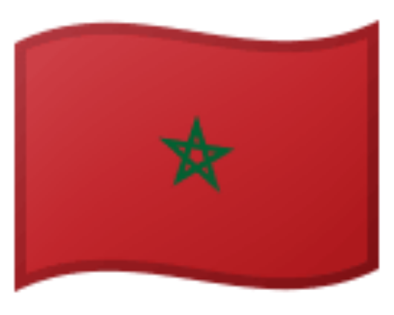
Marrocos
- Cultura árabe
- Cidades históricas
- Clima variado
- Capital: Rabat
- Turismo forte
América do Sul
A América do Sul é um continente localizado no hemisfério sul e é conhecido por sua
grande biodiversidade. Possui florestas tropicais, montanhas e rios importantes como o
Amazonas. A cultura é muito rica, com influência indígena, africana e europeia. A
economia é baseada principalmente na agricultura, mineração e exportação de recursos
naturais.
Brasil
- Maior país da região
- Floresta Amazônica
- Fala português
- Carnaval famoso
- Grande produção agrícola
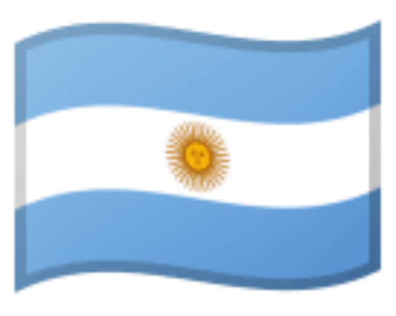
Argentina
- Tango
- Produção de carne
- Capital: Buenos Aires
- Futebol forte
- Patagônia
Chile
- País longo e estreito
- Deserto do Atacama
- Capital: Santiago
- Produção de vinho
- Terremotos frequentes
Peru
- Machu Picchu
- Cultura inca
- Capital: Lima
- Gastronomia famosa
- História rica
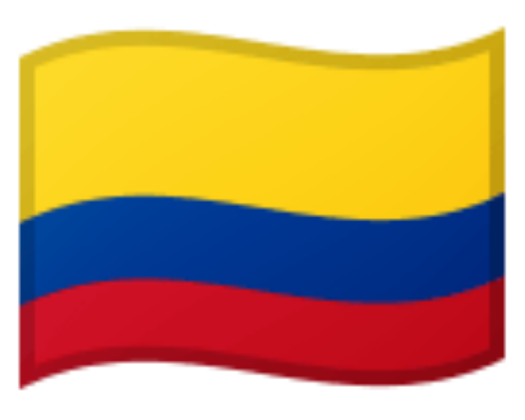
Colômbia
- Produtor de café
- Clima tropical
- Capital: Bogotá
- Biodiversidade
- Cultura vibrante
América do Norte
A América do Norte é formada por países desenvolvidos e em desenvolvimento. Possui
grande influência econômica e cultural no mundo. O continente apresenta grande
diversidade climática, desde regiões muito frias até áreas tropicais. Também é
conhecido por sua tecnologia e infraestrutura avançada em alguns países.
Estados Unidos
- Maior economia
- 50 estados
- Tecnologia avançada
- Hollywood
- Diversidade cultural
Canadá
- Segundo maior país
- Clima frio
- Inglês e francês
- Natureza preservada
- Qualidade de vida
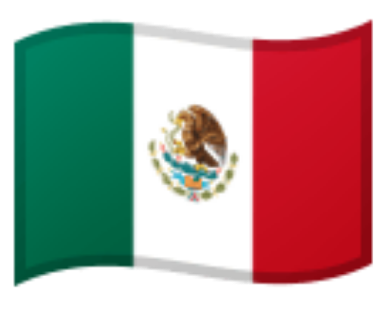
México
- Cultura indígena
- Comida famosa
- Capital: Cidade do México
- Sítios arqueológicos
- Dia dos Mortos
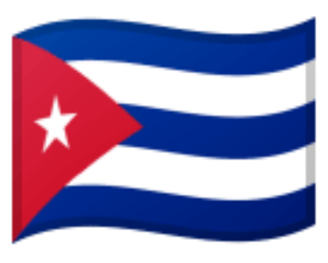
Cuba
- Sistema socialista
- Charutos famosos
- Capital: Havana
- Cultura musical
- Turismo
Jamaica
- Berço do reggae
- Clima tropical
- Capital: Kingston
- Turismo forte
- Cultura vibrante
Europa
A Europa é um continente com grande importância histórica e cultural. Foi o berço de
muitas civilizações antigas e eventos importantes como a Revolução Industrial. Possui
países desenvolvidos e forte influência na política e economia mundial. É conhecida por
sua arte, arquitetura e qualidade de vida.
França
- Torre Eiffel
- Capital: Paris
- Turismo forte
- Gastronomia
- Cultura influente
Alemanha
- Potência industrial
- Capital: Berlim
- Economia forte
- Oktoberfest
- Tecnologia
Itália
- História romana
- Pizza e massas
- Capital: Roma
- Arte famosa
- Turismo
Reino Unido
- Monarquia
- Capital: Londres
- Língua inglesa
- Influência global
- História importante
Espanha
- Flamenco
- Capital: Madri
- Clima quente
- Turismo forte
- História colonial
Ásia
A Ásia é o maior continente do mundo e também o mais populoso. Possui grande
diversidade cultural, religiosa e econômica. É o continente onde surgiram importantes
civilizações antigas. Atualmente, abriga grandes potências econômicas e tecnológicas,
sendo essencial para a economia global.
China
- Mais populoso
- Grande Muralha
- Economia forte
- Cultura milenar
- Potência mundial
Japão
- Tecnologia avançada
- Capital: Tóquio
- Alta expectativa de vida
- Cultura única
- Terremotos
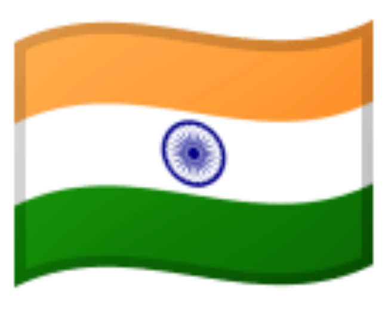
Índia
- Grande população
- Diversidade cultural
- Taj Mahal
- Capital: Nova Délhi
- Religiões diversas
Coreia do Sul
- Tecnologia moderna
- K-pop
- Capital: Seul
- Educação forte
- Economia desenvolvida
Arábia Saudita
- Petróleo
- Clima desértico
- Cidades sagradas
- Cultura conservadora
- Economia energética
Oceania
A Oceania é o menor continente e é formada por ilhas e países insulares. É conhecida
por suas belas paisagens naturais, praias e biodiversidade marinha. A população é
relativamente pequena e a economia depende muito do turismo. A Austrália é o país
mais desenvolvido da região.
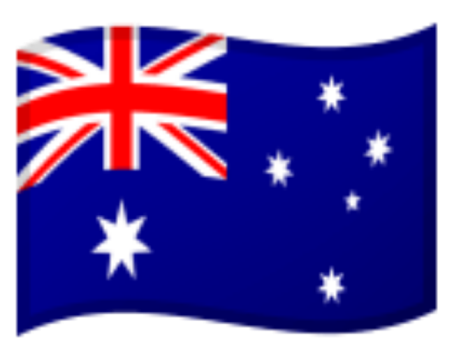
Austrália
- País e continente
- Animais únicos
- Alta qualidade de vida
- Capital: Canberra
- Grande Barreira de Coral
Nova Zelândia
- Paisagens incríveis
- Cultura maori
- Capital: Wellington
- Baixa população
- Cenário de filmes
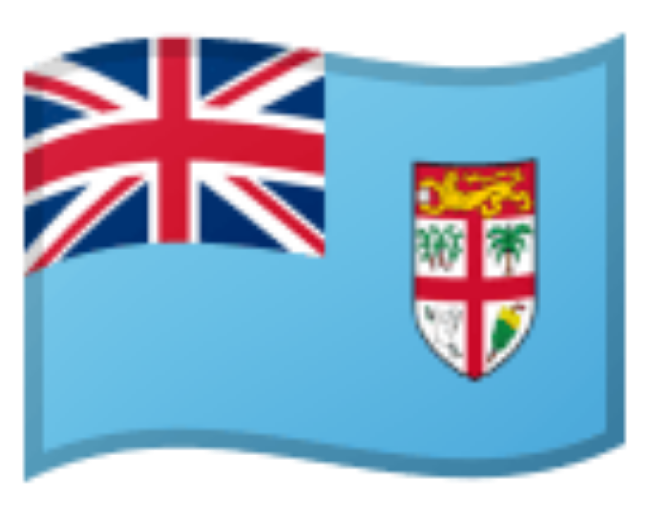
Fiji
- Ilhas paradisíacas
- Clima tropical
- Turismo forte
- Capital: Suva
- Cultura acolhedora
Papua-Nova Guiné
- Muitas línguas
- Cultura diversa
- Florestas densas
- Pouco explorado
- Tradições fortes
Samoa
- Cultura polinésia
- Clima tropical
- Turismo
- Economia simples
- Vida tradicional
Antártida
A Antártida é o continente mais frio do planeta e não possui população permanente. É
utilizada principalmente para pesquisas científicas por diversos países. Seu território é
coberto por gelo durante todo o ano. Apesar das condições extremas, é fundamental
para o equilíbrio climático da Terra.
- Não possui países
- Pesquisas científicas
- Clima extremamente frio
- Bases internacionais
- Sem população fixa